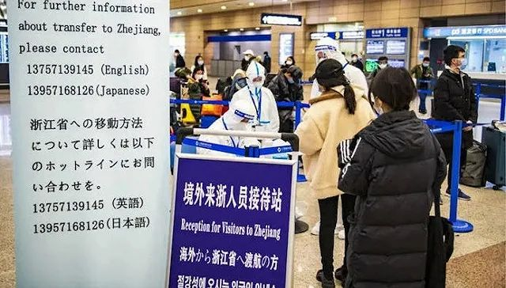

上海防疫再升级：境外输入20例，重点关注16国
原文链接 备份链接 居家隔离标准升级，集中隔离住宿费自理，原则上有200元、400元两档 文 |《财经》记者 陈亮 王静仪 李皙寅 编辑 | 施智梁 作为中国最重要的国际大都市之一，上海正面临第二波防疫考验——严防境外输入。 3月17日下 …

“
上海将对所有来自非重点国家和地区的入境来沪人员实施100%新冠病毒核酸检测。
”
3月22日，上海举行第57场市疫情防控工作发布会，上海市卫健委表示，上海已经对所有来自或途经重点国家和地区的入境来沪人员实行100%隔离。为了进一步加强口岸防控，除集中隔离人员外，上海将对所有来自非重点国家和地区的入境来沪人员实施100%新冠病毒核酸检测。
上海市民政局副局长曾群表示，“外防输入”是当前上海疫情防控的重中之重，社区落实居家隔离措施要从严从紧。
自1月24日起，上海就启动了重点地区来沪人员的居家隔离工作。社区落实居家隔离措施，对中外人士是一视同仁的。截至目前，全市居家隔离人员中，凡出现发热等症状的，均在第一时间被转送至指定医疗机构发热门诊。
从近两个月的实践来看，上海居家隔离工作开展有序有效，充分发挥了在疫情防控中的网底作用。在当前，更需要继续坚持，进一步严格落实。
曾群再次强调，居家隔离必须符合“一人一户或一家”的居住条件，也就是居家隔离对象和非居家隔离对象不可以住在同一套房子里。承诺全家人一起居家隔离的，或全家人都需要居家隔离的，才可以住在同一套房子里。对此，相关社区必须上门核查。条件不具备的，一律实行集中隔离。
二是需要居家隔离的重点国家入境人员，必须在各区“临时集中留验点”先通过核酸测试，也就是结果必须为“阴性”。
三是严格落实针对居家隔离的社区管理。地区公安、卫健部门要会同社区，确保居家隔离人员不离开住所。对擅自离开的，依法处理。
曾群最后说，为确保相关工作切实落地，上海还明确要求居村委会要进一步加强重点国家入境人员返回小区时的信息登记和排摸等工作，做到全覆盖、无遗漏。居村委会要协助社区卫生服务中心落实医学监测，落实疫情防控发热筛查“零报告”制度。
3月20日零点起，上海疫情防控重点国家由16国调整为24国。上海海关副关长蒋原透露，20日当日，上海海关共监管入境航班123架次，入境人员11298人。通过海关流行病学调查统计数据显示，其中有重点国家旅居史的入境人员共计7544人，占入境人员总数的67%。
蒋原表示，从上述数据分析看，做好对非重点国家入境人员检疫工作，是做好口岸防输入工作的重要环节。
此外，上海对非重点国家的航班也已全力实施100%登临检疫，对入境人员实施100%体温监测、100%流行病学调查和100%健康申明卡审核。
蒋原表示，上海海关对空港口岸所有入境人员实行全面集中管控、封闭管理。
截至目前，上海海关从全关范围紧急调配关员支援空港一线。由原编制在岗的500人增加到了1132人，24小时不间断运作，全面强化口岸现场的检疫力量。
同时，上海海关还根据境外疫情形势变化和上海口岸疫情防控需要，着力做好后续增援人员储备与调配工作，视防控需要，随时调配到岗。
天气热了起来，上海市民什么时候可以摘掉口罩呢？
对此，疫情防控公共卫生专家组成员吴凡为市民进行了科普解释，并提供了关于场所（场合）和人员佩戴口罩的指引。
吴凡表示，若有以下情况人员，依然需要佩戴口罩：
一、有发热、鼻塞、流涕、咳嗽等症状者必须佩戴口罩。
二、依据执业规范和有关规定相关从业人员必须佩戴口罩（包括医疗机构医务人员；从事公共服务从业人员；从事疫情相关工作人员）。
三、进入人员密集场所（场合）的人员必须佩戴口罩（包括医院、福利机构、学校、交通工具及站点、影剧院、室内游乐场所等）。
四、倡导年老及体弱者，免疫力低下及慢性疾病患者外出时自愿佩戴口罩。
同时，吴凡也针对市民在工作生活中的防护给予了建议。首先，要养成并延续良好习惯。她强调，洗手尤其重要。另外，在咳嗽、打喷嚏还是要用手肘捂口鼻，不要随意用手触摸眼口鼻等部位。再者，经常开窗通风也很重要。
在日常办公时，吴凡也表示，要形成良好的制度，尤其是员工健康巡查管理制度，在公共区域应定时消毒。

原文链接 备份链接 居家隔离标准升级，集中隔离住宿费自理，原则上有200元、400元两档 文 |《财经》记者 陈亮 王静仪 李皙寅 编辑 | 施智梁 作为中国最重要的国际大都市之一，上海正面临第二波防疫考验——严防境外输入。 3月17日下 …
原文链接 备份链接 图片来源：视觉中国 实习记者：刘世龙 “ 针对返工期间疫情防控问题，北京市疫情防控工作领导小组社区防控组办公室副主任、市委组织部副部长张强宣布，对七类人群给予特殊照顾。 ” 北京一位哺乳期员工居家隔离期间复工，导致公司 …
原文链接 备份链接 【财新网】（记者 张兰太）新冠疫情全球大流行仍未得到控制，境外累计确诊病例进一步超过中国，而国内本土疫情得到基本控制，这造成境外人员回流国内的巨大渗透压，境外输入确诊病例继续成为国内新增确诊病例的主体，严防疫情输入风险 …
原文链接 备份链接 【财新网】（记者 张兰太）全国境内疫情呈现向好势头，3月6日0-24时，31个省份和“重灾区”湖北新增确诊病例双双首度降至两位数（共99例，其中湖北74例）。疫情防控取得积极成效，但近期除湖北外的其他30个省份的日新增 …
原文链接 备份链接 【财新网】（记者 张兰太）近期全国各地疫情逐渐得到控制，“重灾区”湖北、武汉疫情近日也出现积极变化，而海外疫情迅速蔓延，每日新增病例数连续超过国内，累计确诊病例数已经破万，严防海外疫情输入或“倒灌”风险成为全国各地疫情 …